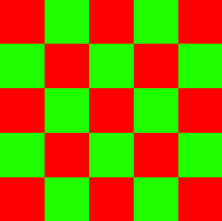
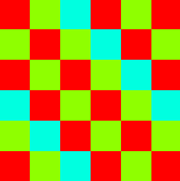

Flexible Locking #
Modern versions of Java provide classes for Locks and Conditions.
Task: Write tests #
Create a new test suite
documenting how Locks and Conditions can be used,
and compare their behaviour with the classic synchronization primitives
around intrinsic locks.
Coloring grids #
We now discuss a concurrent algorithm that benefits from the more flexible locks provided by modern Java versions. More specifically, we will use multiple locks for fine grained coordination of read and write access to parts of a shared resource. When programming with multiple locks, we need to be careful not to run into deadlocks, meaning that threads wait for each other both holding a lock the other one needs.
When started, the application shows a colored grid that might look as follows.
The grid is interpreted as endlessly repeating grid. The picture shows a repeated 4x4 grid. In order for us to be able to see all neighbors of each cell, the last row and column repeats the first. When looking at the (top-left) 4x4 grid closely, we can see that the cells all have different colors (although, admittedly, the four shades of green look very similar.)
When clicking in the grid, the application shows an animation choosing different colors for the cells of the grid. The goal is to reduce the number of used colors while still maintaining different colors for neighboring cells. For a grid with an even number of rows and columns, like the 4x4 grid shown above, the animation might finish with a coloring using only two colors arranged like a chess board.

Grids with an odd number of rows and columns need to be colored with at least three colors when neighboring cells should have different colors. Due to the endless nature of the grid the last row (and column) is neighboring the first. In a chess-board like pattern the first row (and column) would be identical to the last which is not allowed according to the rules. Here is a coloring of a repeated 5x5 grid using three colors that has been created using the example application.

Sequential algorithm #
Before discussing a concurrent algorithm for coloring grids,
we present its sequential version.
The method pickNewColor defined in the class SingleThreadColoring
implements a recursive algorithm to pick new colors for cells
starting at the cell with the given coordinates.
public void pickNewColor(int row, int col) {
final Set<Float> neighborHues = grid.neighborIndices(row, col) //
.map(grid::getCell) //
.map(ColoredLock::getHue) //
.collect(Collectors.toSet());
final float newHue = grid.palette() //
.filter(hue -> !neighborHues.contains(hue))
.findFirst() //
.orElseThrow();
if (grid.getCell(row, col).getHue() != newHue) {
grid.getCell(row, col).setHue(newHue);
grid.neighborIndices(row, col).forEach(index -> {
pickNewColor(grid.row(index), grid.col(index));
});
}
}
The method first computes a set of colors of all neighboring cells. Then it picks the first color from a palette that is not used by any neighbor. If the picked color differs from the current color the color is changed and the method is called recursively for each neighbor of the original cell. (The actual implementation includes additional statements to manage the animation which we omit here.)
To pick new colors for all cells in a grid, we can apply the function to each of the cells. The recursive calls ensure that no two neighboring cells have the same color in the end.
Concurrent algorithm #
The presented algorithm is very simple. There are more sophisticated coloring algorithms that are more efficient and (like ours) applicable to different notions of neighbors. However, we do not aim to discuss good coloring algorithms. Our goal is to discuss basic primitives for concurrent programming. Our simple coloring algorithm serves that goal.
To formulate a concurrent version of the presented algorithm
we could execute each (initial as well as recursive) call
of pickNewColor as a separate task using a thread pool.
Intuitively, different cells should be able to pick a new color
relatively independently.
However, such an implementation would not be correct.
If two neighboring cells pick a new color at the same time
they might pick the same color if they both consider only the initial color
of each other.
We need synchronization to avoid neighboring cells picking their color
at the same time.
On the other hand, synchronizing all calls
to pickNewColor using a single lock
(for example by declaring the method synchronized)
would effectively lead to a sequential implementation
where even cells that are far apart
could not pick their color at the same time.
This observation naturally leads us to using more than one lock.
We will use as many locks as there are cells in the grid
(not counting repeated cells.)
Moreover, locking cells individually is not the only thing we can do to improve parallelism in our implementation. It would be fine for two threads to read the color of the same cell simultaneously, as long as that cell does not currently attempt to pick a new color for itself. This pattern of allowing simultaneous read access as long as there is no write access is very common. It is supported in Java via ReadWriteLocks.
We can now discuss the implementation
of our concurrent algorithm for grid coloring.
We do not use the common ForkJoinPool
because our tasks block when waiting for a lock.
Instead the MultiThreadColoring algorithm uses a chached thread pool.
static final ExecutorService POOL = Executors.newCachedThreadPool();
Here is a first (still problematic) concurrent version of pickNewColor.
public void pickNewColor(int row, int col) {
POOL.execute(() -> {
final List<ColoredLock> neighbors = grid.neighborIndices(row, col) //
.map(grid::getCell) //
.collect(Collectors.toList());
final List<ColoredLock> locked = new ArrayList<>(neighbors);
locked.add(grid.getCell(row, col));
locked.forEach(cell -> {
cell.lock(cell.index() == grid.index(row, col));
});
final Set<Float> neighborHues = neighbors.stream() //
.map(ColoredLock::getHue) //
.collect(Collectors.toSet());
final float newHue = grid.palette() //
.filter(hue -> !neighborHues.contains(hue))
.findFirst() //
.orElseThrow();
if (grid.getCell(row, col).getHue() != newHue) {
grid.getCell(row, col).setHue(newHue);
locked.forEach(cell -> {
cell.unlock(cell.index() == grid.index(row, col));
});
grid.neighborIndices(row, col).forEach(index -> {
pickNewColor(grid.row(index), grid.col(index));
});
} else {
locked.forEach(cell -> {
cell.unlock(cell.index() == grid.index(row, col));
});
}
});
}
Again, we omit statements managing the animation shown in the actual implementation.
This implementation executes each call to pickNewColor
as a task in the POOL.
Compared to the previous version, this version includes
statements for locking and unlocking grid cells.
The used lock and unlock methods accept an argument
signifying whether write access is (or was) required.
When executing this algorithm,
the animation usually freezes.
For example,
when every task created by an initial call to pickNewColor
first takes the read lock of its left neighbor,
then every read lock is taken
and no task can take a write lock.
As a consequence, all tasks block each other
waiting for a write lock corresponding to a read lock
taken by another task.
Deadlock
occurs if two threads try to take the same locks
in a different order.
A common strategy to avoid deadlock is to always take locks
in the same order.
We can insert Collections.sort(locked)
to sort grid cells by their index
directly after the call to locked.add
to obtain a concurrent coloring implementation
that does not freeze.